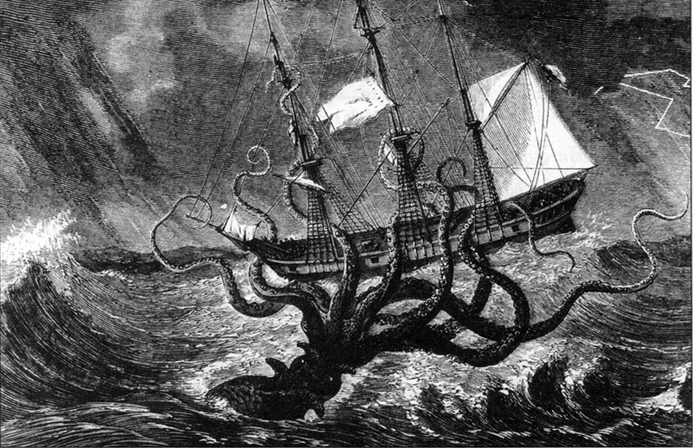

Sunday, November the 20th, 2011
back to: title, date or indexes
Many thanks to Ruth Bosch for drawing to my attention a sea-creature headline almost as enticing as Porpoises Rescue Dick Van Dyke. This one is
Giant prehistoric krakens may have sculpted self-portraits using ichthyosaur bones
Read all about it here. Those pesky giant krakens! You never know what they'll get up to next!

Hooting Yard on the Air, May the 24th, 2018 : “Gus” (starts around 13:39)